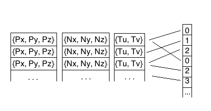

How to Build a Video Game
- June 16th, 2015
- Richard Sartor
- https://github.com/izrik
About me
- Playing games since 6 or 7
- Programming since 12
- 3D programming since 17
- I like to code
Some approaches
- Game Engine
- Code it yourself
- Hire someone else (beyond scope)
Game Engines

Game Engines
- Off-the-shelf turn-key solution
- Nice, user-friendly GUI
- Large ecosystem for components and content assets
Game Engines


Instead, let's do it The Hard Way™...
How to make a video game
- 3D Math & Graphics
- Character Modelling & Animation
- Audio & Music
- Input
- Game Logic
3D Math & Graphics
- api's
- Vectors, Polygons, Meshes
- Normal Vectors
- Lighting
- Types of Lights
- Matrices, Transforms
- Vertices, Textures, UV Coords
- Buffers and Vertex Data
- Animations
- Graphics Pipeline
- Shaders
- HUD and 2D
3D Graphics API's
- DirectX
- OpenGL (and now Vulkan)
- other: SDL, Metal, etc
Vectors, Polygons, Meshes
- Vector: three coordinates (X,Y,Z) that represent a point in 3D space
- Polygon: three (or more) vectors that define a solid region
- Mesh: a collection of polygons
Vector
Polygon
Polygon
Polygon
Mesh
Mesh
Normal Vectors
- Face normal vectors are orthogonal to a face (polygon)
- Vertex normals are associated with a point on the polygon
- These vectors are used to calculate lighting and shadow
Face normals
Vertex normals
Both

Flat vs. Smooth
Lighting
- Diffuse - Typical. Brightness proportional to cosine of angle
- Specular - Shiny. Proportional to angle between light and camera
- Ambient - Everywhere all the time.
- Emissive - All the time, particular to a surface.

"Lambert2" by GianniG46 - Own work. Licensed under CC BY-SA 3.0 via Wikimedia Commons - https://commons.wikimedia.org/wiki/File:Lambert2.gif#/media/File:Lambert2.gif
Diffuse
Specular
Ambient
Emissive

Combined
Types of Lights
- Point - Has a position in space, and shines in all directions. E.g. light bulb.
- Specular - No specific position but shines in a particular direction. E.g. the sun.
- Spot - Has particular position and direction, and emits a cone of light.
Point Light
Directional Light
Spot Light
Vectors and Vertices
Position vectors and normal vectors are related, but distinct. Combine them into a structure that represents a single point, called a "vertex".
Matrices and Transforms
- Matrices are 4x4 arrays of floats.
- They can "transform" vectors, changing them through the power of math.
- Most common operations are Translation, Rotation, and Scaling.
- Matrices can be "multiplied", which combines their effects.
Matrices and Transforms
Identity
Matrices and Transforms
Translation
Matrices and Transforms
Rotation
Matrices and Transforms
Scaling
Matrices and Transforms
- World - transforms the model into its place and orientation in the scene
- View - transforms the model into its place relative to the camera
- Projection - converts 3D coordinates into 2D screen coordinates
Textures & UV Coords
solid colors are boring. Paint a picture on the model itself.
Textures & UV Coords
Textures & UV Coords

Textures & UV Coords
Add new components to the vertex structure: Texture (or "UV") coordinates.
Textures & UV Coords
Buffers and Vertex Data
Vertices are arranged in large buffers (arrays) in GPU memory. You can have one buffer of all vertex components, or a buffer for each vertex component separately, or some combination. Every buffer must have the same number of elements.
Buffers and Vertex Data

Index Buffers
Instead of duplicating shared vertices, another buffer, called an index buffer, will store indexes into the vertex buffer(s)

Animations
Also called "Skinning".
Hierarchical bones - each bone affects part of the mesh, a subset of the vertices
Each bones affects part of the whole mesh
Animations
Each vertex stores a list of bone indexes and bone weights (additional vertex components, requires more space in the vertex buffer).
Weights all add up to one.
Each bone has its own transform, which is then multiplied by the parent
Vertices are effectively transformed from model-space back into model-space, so they can then be transformed by the World matrix as usual.
Animations

"Sintel-hand" by © copyright Blender Foundation / www.sintel.org. Licensed under CC BY-SA 3.0 via Wikimedia Commons - https://commons.wikimedia.org/wiki/File:Sintel-hand.png#/media/File:Sintel-hand.png
Animations
Graphics Pipeline
All of the steps needed to turn input vertices and polygons into colored, textured, shaded pixels on the screen.
- Input geometry (vertices and polygons)
- Tessellation
- Rasterization
- Color, Texture, and Lighting
- Output pixels
Then: Fixed Pipeline

Khronos Group https://www.khronos.org/opengles/2_X/
Now: Programmable Pipeline

Khronos Group https://www.khronos.org/opengles/2_X/
Shaders
Self-contained programs that can be run directly on the GPU
Operate on 3D data, vertices, polygons, pixels.
Written in C-like languages, HLSL and GLSL
Shaders
Can do things like:
- Define custom lighting types
- Color dependent on position
- Generate procedural geometry on-the-fly (hair, fur, etc)
Cel shading
A cartoon-like appearance

"Celshading teapot large" by User:NicolasSourd - Own work. Licensed under CC BY 2.5 via Wikimedia Commons - https://commons.wikimedia.org/wiki/File:Celshading_teapot_large.png#/media/File:Celshading_teapot_large.png
Shadow Maps
Shadow Maps
Examples Abound
- http://glslsandbox.com/
- http://www.lighthouse3d.com/tutorials/glsl-tutorial/shader-examples/
- https://www.opengl.org/wiki/Geometry_Shader_Examples
HUD and 2D
We still have a use for 2D. Drawing text on screen, icons, etc.
Character Modelling & Animation
Hand-coding all vectors, triangles, and meshes would be painfully tedious. Using a 3D content creation workflow using a modelling package is better. Also, it allows people with a different skill set to contribute.
3D Modelling Software
Blender
File Formats
- Fbx - proprietary, binary of ascii, SDK
- Collada - designed by Khronos, XML based
- Modeller-specific
Audio & Music
Just like in graphics programming, there exist audio API's for accessing the hardware to play sound effects and music in a hardware-independent way. Several different file formats can be used as well.
Audio API's
- DirectX - Windows Only
- OpenAL - Formerly open, now proprietary. There are open-source implementations, though.
- Platform specific API's - Not portable
Audio File Formats
- WAV - generic container format. Usually raw PCM audio samples
- MP3 - advanced compression format targeted to human hearing. Great compression ratio, but typically requires license
- Ogg Vorbis - open source competitor to MP3, not constrained by patents
Input
- keyboards, mice, gamepads, joysticks
- buttons (binary, on/off)
- axes (integer or float)
Game Logic
- game loop
- draw/update cycle
- physics
- ai
Game Loop
At its core, a game is just an endless while loop. For each frame, the game needs to:
- Get input from the user
- Respond to the input
- Update the game world
- Draw the screen
The Draw/Update cycle
Most of the loop is divided into two sections: Draw and Update.
Draw renders all the
- game loop
- draw/update cycle
- physics
- ai
Physics
Update objects. Simulate accurate gravity, acceleration, velocity, collisions, etc.
Can be hardware-accelerated
AI
Computer controlled characters.
Behavior Trees
The End
See my game-in-progress here:
http://troublemakers.izrik.com